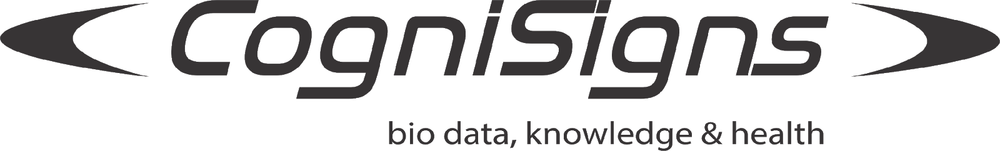
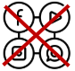
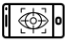
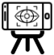
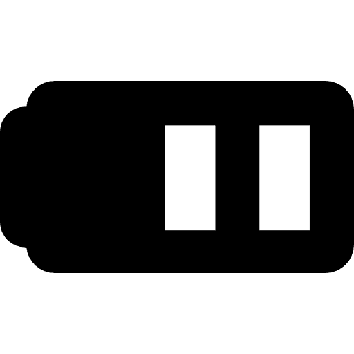

Começar análise
Parar
Como participar da análise V.E.R.A Foco Atencional:
Por favor, siga as próximas orientações
Você participará de um experimento com rastreamento ocular

Feche todas as abas do navegador
Usando notebook ou celular, verifique a duração da bateria

Acesse via computador, tablet ou celular
Caso opte pelo computador, ele deve possuir web cam

Celular ou tablet fixo e na horizontal
Caso acesse via celular ou tablet, não segure-o com as mãos

Nível da bateria
Via notebook, tablet ou celular, verifique a duração da bateria
Libere o acesso à webcam
NÃO armazenamos nenhuma imagem ou som durante a análise
Fique na frente da câmera
Mantenha sua cabeça e a câmera paradas o tempo todo
Seu rosto deve estar bem iluminado
Sente-se confortavelmente em um local com boa iluminação
Vamos começar!
Clique no botão acima
"Começar análise"
Após clicar,
enquadre seu rosto
, até que a cor do quadro altere de vermelho para preto.
A imagem de seu rosto deve
completar todo o espaço visível.
Em seguida, clique em
Iniciar Calibração
e após o ponto vermelho surgir, siga-o com os olhos.
Assim que o ponto vermelho desaparecer,
o teste iniciará automaticamente.
Real-Time Data:
Desculpa, mas o seu navegador não suporta vídeos incorporados.